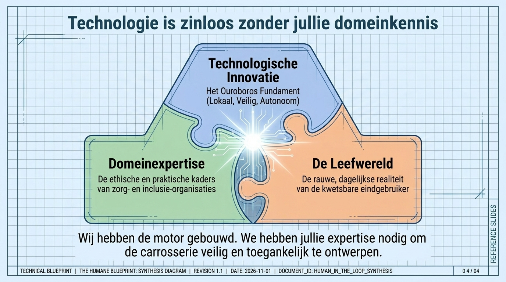
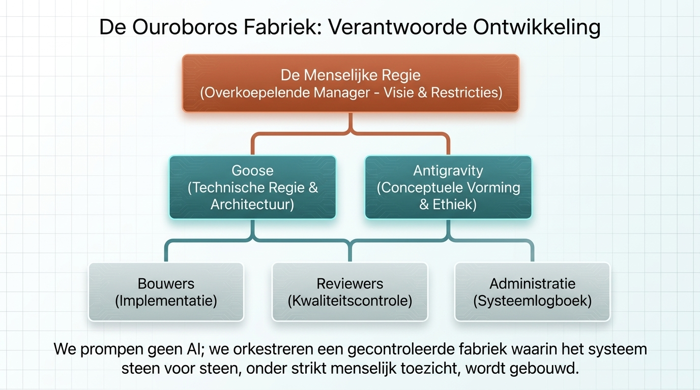

La réalité vécue d’abord
Les questions de pilote partent de vrais moments de confusion, risque ou réconfort.
Collaboration
Les organisations de soin et d’inclusion connaissent la réalité vécue : peur, honte, routines, aidants, éthique et limites pratiques. Ce savoir détermine quand la protection aide au lieu d’infantiliser.

La technologie a besoin d’expertise métier
Un pilote responsable part d’exemples concrets de panique, d’errance et de routine. Ensuite, interface, permissions et escalade sont conçues avec les personnes qui connaissent le contexte.
Les questions de pilote partent de vrais moments de confusion, risque ou réconfort.
Confidentialité, consentement, proportionnalité et dignité font partie du design.


Introduction Guardian
La vidéo reste disponible comme asset partagé, tandis que le récit est réparti en pages navigables dans cinq langues.
Prochaine étape

Prêt à le cartographier ?
Le chemin le plus rapide est un petit test sûr autour d’un besoin humain.